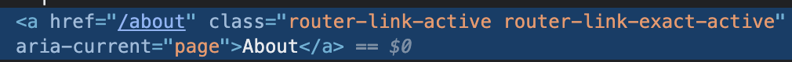
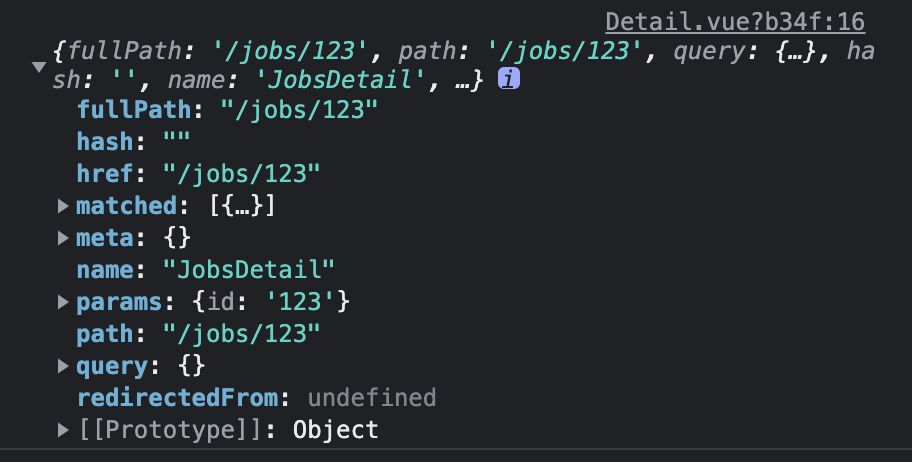
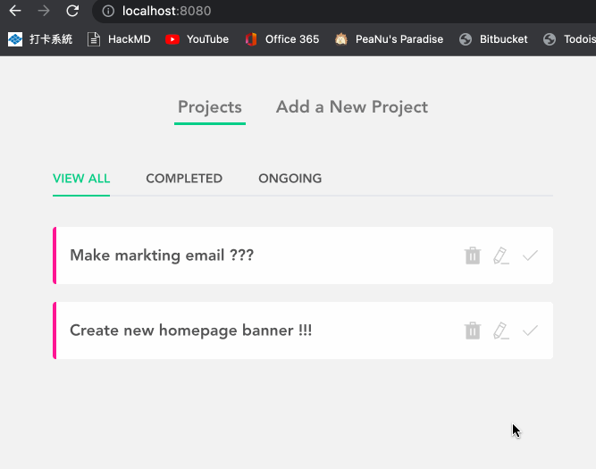

學 SPA 的好朋友。
簡述
雖然很久很久以前有寫過 Vue-Router，不過那次實在是…寫得沒有很好，想起來都覺得黑歷史 XD，不過藉由這次重溫 Vue 可以來好好練習一下。
起手式
這邊的範例會用 Vue-CLI 來從頭建立附帶「Vue-Router」的專案，反正主要是要練習路由的觀念，等你懂了以後要在現有專案裡面導入應該也不會有太大問題。
專案建好後先注意到 /src/router/index.js 這個檔案：
1 | import { createRouter, createWebHistory } from 'vue-router' |
首先要在 Vue 建立路由的基本慣例是寫一隻獨立的 router.js，只要是跟路由有關的東西都會全部寫在這裡。這個跟 React 直接塞在 Component 中的做法還蠻不一樣的，我覺得各有各的好處。
接著來一段一段解釋 code 的部分：
const routes = [{...}]
陣列中的每個物件都代表一個路由，像 '/' 會對應到 HomeView，/about 會對應的 AboutView，這個應該蠻好理解的。
const router = createRouter({{...})
前面是設定路由，這邊才是正式配置（Register）路由，其實就是透過 Vue-Router 提供的 method 來做配置，這邊設定了兩個東西：
- 使用 history API，另一種是 hash API，簡單來說就是網址有沒有
#的差別（但如果你有要部署的話最好是多看一些資料搞清楚實際差別，不然一定會踩雷） - 設定路由資料（就是前面建立的
routes）
至於我註解起來的那一段是跟「延遲載入」相關的設定。簡單來說就是等我「進到那個路由時再幫我加載需要的 JS 就好，不需要在一開始就載入所有路由」，知道這樣就差不多了，如果真的想知道細節可以參考官方文件。
router-link－帶你趴趴走
接著來介紹 Vue-Router 提供的元件 <router-link>，打開 /src/views/App.vue 會看到這個內容：
1 | <template> |
它的用途就跟 <a> 很像，不過有一個很大的差別在於：會不會發 request 去拿 HTML。
<a> 的預設行為就是會發一個 request 到 server，但我們在寫 Vue 的時候並不想要這個行為，所以才會有 <router-link> 這個東西來取代它。
順道一提，<router-view /> 就是用來顯示某個路由的內容，可以想成是 React 的 <Routes>：
1 | function App() { |
接下來補充一些 router-link 的特性，這些特性在某些時候還蠻方便的。
自帶 active class
假設我現在在 /about 的路由，那對應的 link 就會有這樣的 class：

會自動添加 router-link-active 和 router-link-exact-active，通常會拿後面拿個來用（完全匹配）。
總之如果你想要針對 current 做 active 樣式的話這會是一個很方便的機制。
動態路徑
除了原本的寫法以外，你也可以用 v-bind 的方式來指定，這個我直接示範比較快：
1 | <template> |
裡面可以傳入我們在 router.js 中寫好的 routes 物件來做對應（忘記內容的話可以拉回去上面看）。
雖然我覺得這樣的缺點是沒辦法一眼看出網址是啥，不過換來的好處是當你要改 path 時完全不需要來改 <router-link>，因為他是參考 name 的值，我覺得這在大型專案上會是很大的優勢。
動態路由參數
假設你有一個路由是 /Products，而它底下可能會有不同的產品頁面，會用 /Products/A 或 /Products/B 之類的方式來表示。
這個時候你不可能去 hardcode 每一個路由，就會用「動態」的方式來撰寫。
在 Vue 寫的方式是這樣：
1 | const routes = [ |
所以這個 :id 就會是動態的值，如果我到 /job/A 的話 :id 就會是 A，job/B 就會是 B，以此類推。
取得參數值
有了動態參數以後通常會需要在對應路由的元件（ProductDetail）來透過他來打 API 之類的，所以這邊介紹一下怎麼取得參數值：
1 | <template> |
$route 是一個物件，裡面會放蠻多跟路由有關的資訊，不過這邊主要會用到的是 params，代表動態參數。

除了透過 $route 以外還有一種比較特別的方法，就是透過 props：
1 | <template> |
要怎麼拿到這個 props？很簡單，只要到 router.js 開啟這功能就好：
1 | const routes = [ |
手動切換路由
除了用 <router-link> 以外，也可以用手動的方式來切換路由，技術上來說叫做「Programmatic Navigation」：
1 | <template> |
如果你覺得這樣子看起來很麻煩的話也可以寫成這樣子：
1 | <template> |
更多的寫法可以參考這裡
重新導向
這邊直接看 code 吧：
1 | const routes = [ |
為了把舊的網址都導向到新的位置，我們可以像上面這樣子來重新導向。
404 頁面
Vue 的寫法比較特別一點，要透過 params 搭配正則表達式的方式來做，像這樣：
1 | const routes = [ |
裡面的 catchAll 是自訂名稱，你喜歡的話也可以叫 abc。總之重點在於 () 中的正則表達式，只要符合條件就會進到這個路由。
小陷阱－在不同路上使用同的元件
這是我自己實作時踩到的雷，先來看看當時的情境：
1 | const routes = [ |
之所以會共用同一個 Form 是因為這兩個只差在：
- 表單的初始值
- 提交表單時要更新資料 or 建立資料
可是當時就遇到了這樣的狀況：

明明就切換到不同的路由上了，但內容卻被緩存了下來，甚至根本沒有被 unmount（自己用生命週期 hook 實測的結果）。
不過在 Vue 裡面這是正常的現象，AKA「節能機制」。簡單來說就是 Vue 會盡可能把能重複利用的東西留下來用的關係。
要解決這個辦法的作法就是加上 key，至於要加在哪？以我們這邊的問題來說是出現在「路由顯示上」，所以很直覺的就會加在這裡：
1 | <router-view :key="$route.path" /> |
只要讓每一個路由都有唯一的 key，Vue 就會直接視為是不同的東西，強制重新渲染，就能解決這個問題了。
詳細可以參考這篇。